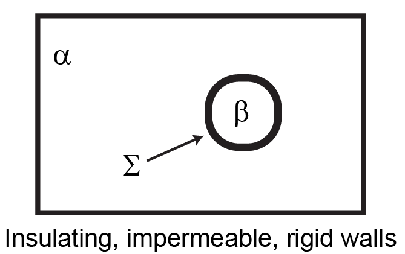

Problem Set 6 (Due Wednesday, December 6, 2023)#
Question 1: Conditions of equilibrium#
In Lecture 21, we derived conditions of equilibrium for isolated systems containing multiple phases that were free to exchange material. We will now consider a new condition of equilibrium that arises if a reaction occurs in an isolated multicomponent system. Assume that a system contains \(n\) components in a single phase and undergoes a reaction at constant temperature involing all \(n\) components. \(\nu_i\) is the stoichiometric coefficient of component \(i\) and assume the reaction is properly balanced. The extent of reaction is defined as:
The extent of reaction provides a mass balance constraint; \(\nu_i > 0\) for products and \(\nu_i < 0\) for reactants so that as a reaction proceeds (\(\delta r>0\)) the number of moles of each product increases while the number of moles of each reactant decreases.
(a)
Show that the following condition must be true at equilibrium:
Hints
For a single-component, isolated system \(\partial U = \partial V = 0\).
(b)
Consider a single-component system with two phases, \(\alpha\) and \(\beta\), where \(\alpha\) is the bulk phase and \(\beta\) is a small fragment of a different phase. There is also a surface phase, \(\Sigma\), dividing \(\alpha\) and \(\beta\) that has area \(\underline{A}\) and surface tension \(\sigma\). \(\sigma\) and \(\underline{A}\) are a conjugate pair. The combined \(\alpha\), \(\beta\), and \(\Sigma\) system is enclosed by insulating, rigid, impermeable walls, but the individual phases \(\alpha\), \(\beta\), and \(\Sigma\) are able to exchange energy, volume, and mass with each other.

Derive all relations between parameters that must hold at equilibrium, including an expression relating \(P^\alpha\), \(P^\beta\), and \(\sigma\). You may assume that the change in volume of the surface phase is negligible, although the change in the area of the surface phase is not. Note that the volume of the \(\beta\) phase and the area of the surface phase are not independent of each other.
Hints
Construct an energy balance for your system, noting which parameters can vary freely and which are constant.
Question 2: Constraints on phase equilibrium#
In this problem, we will first derive a relationship (the Gibbs Phase Rule) that enumerates the number of degrees of freedom (i.e., number of independent intensive parameters that are first-derivatives of the fundamental relation, such as \(T\) or \(P\)) available to a system at phase equilibrium. We will then further show that relationships between intensive parameters can be used to infer the slopes of coexistence curves on phase diagrams.
a
Assume a system has \(n\) components and \(\pi\) phases; for example, for a two-component system at vapor-liquid coexistence, \(n=2\) and \(\pi = 2\). All phases are connected by virtual boundaries that are diathermal, movable, and open, and no other work terms contribute to the system energy. At equilibrium, how many degrees of freedom (independent intensive parameters), denoted by \(\mathcal{F}\), does the system have?
(b)
Based on the Gibbs phase rule, explain why regions of two-phase coexistence correspond to lines and regions of three-phase coexistence correspond to points on \(P-T\) phase diagrams.
(c)
Starting from the conditions of phase equilibrium, show that the slope of the vapor-liquid coexistence curve on a \(P-T\) phase diagram can be written as:
The subscript \([V-L]\) indicates that the system is at vapor-liquid coexistence, \(\Delta H^V = H^V - H^L\) is the latent heat, \(H^V\) is the molar enthalpy of the vapor phase, and \(H^L\) is the molar enthalpy of the liquid phase. Similarly, \(\Delta V^V = V^V - V^L\), where \(V^V\) is the molar volume of the vapor phase and \(V^L\) is the molar volume of the liquid phase.
Hints
It may be helpful to recall the differential form of the Gibbs-Duhem relation and the definition of the enthalpy found using Euler's theorem.(d)
Extrapolating from your result in part c, explain why the slope of the solid-liquid coexistence curve is positive for most substances but negative for water.
Question 3: Enthalpy change of a real gas#
Question
A gas follows the equation of state:
where \(b=20\) cm\(^3\)/mol, \(a=40,000\) cm\(^3\) K/mol. The ideal-gas heat capacity of the system is given by \(C_P^\circ = 20.84 + 0.044T\) J/mol\(\cdot\)K. Calculate the change in enthalpy (in J/mol) if the gas is compressed from 300 K and 1 bar to 320 K and 20 bar.